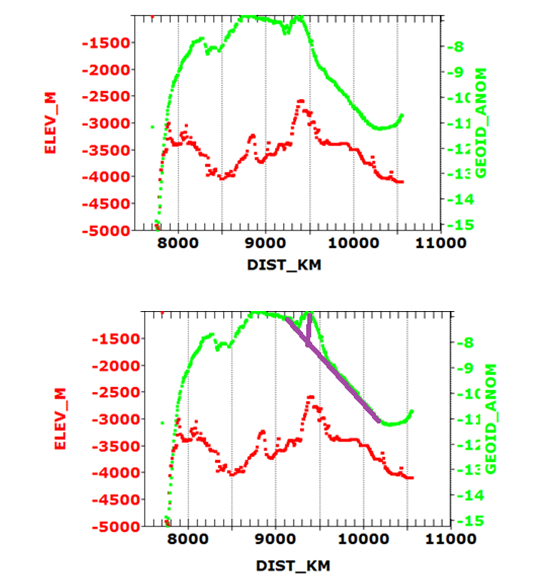

|
 |
To look at the medium wavength anomalies, which are expected to have
wavelengths of a few 100 km, we have zoomed in on the orbit.
The
top figure shows the bathymetry and geoid anomaly. There is a small anomaly in the geoid at about 9350 km. The bottom diagram shows the long wavelength trend of the geoid with a purple line, which is becoming more negative after the peak at around 8800 km. The vertical purple line shows the medium wavelength anomaly as only about 1 m. The bathymetric profile below shows that the feature on the seafloor is on the order of 100 times larger than the geoid anomaly. |
Last revision 9/13/2022